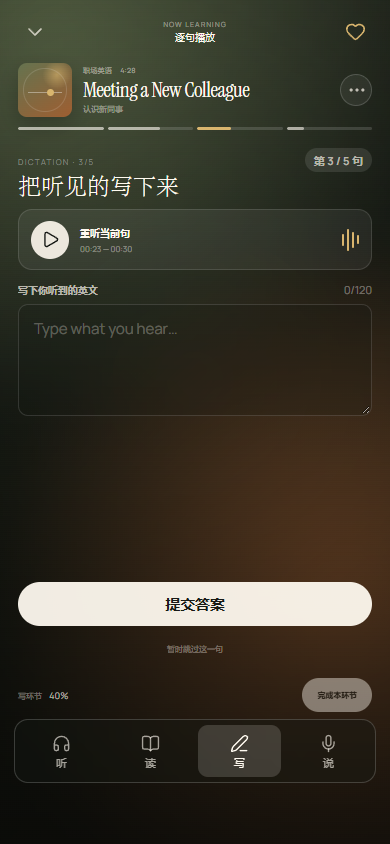

Sayline / Learner experience
一句一句，
听见自己。
从分类发现课程，进入沉浸式播放器完成听、读、写、说，再通过学习统计看见自己的节奏。收藏与上下切课沿用当前列表顺序。
01 / 登录
Account
02 / 首页
Discovery
03 / 我喜欢
Saved courses
04 / 播放器 · 听
Listen
05 / 播放器 · 读
Read

06 / 播放器 · 写
Dictation
07 / 播放器 · 说
Shadowing
08 / 我的 · 周
Weekly report
09 / 我的 · 月
Monthly report